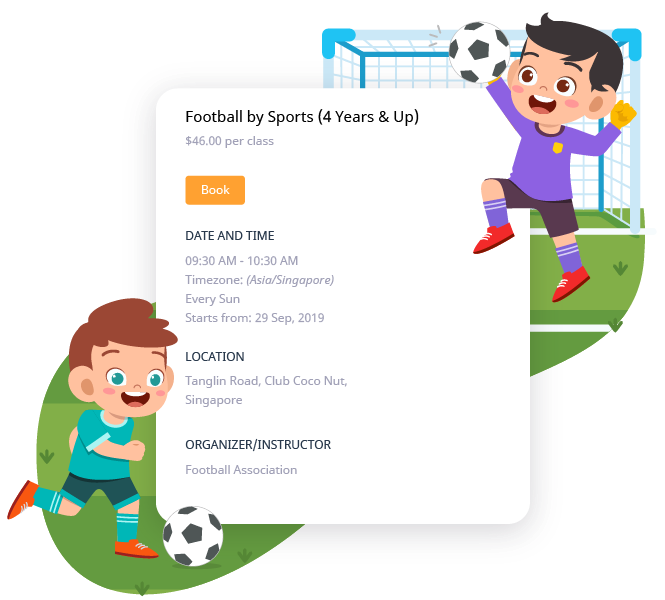
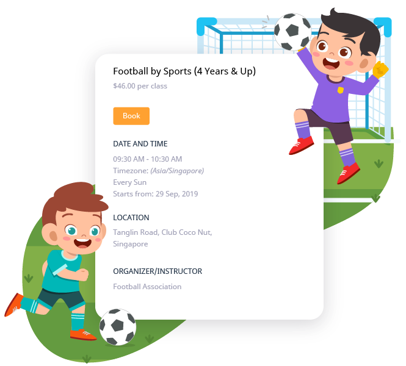

PROJECTS

My Second Teacher (MST)

Futsal Network Nepal
Greetings from Abiral Subedi! I am a graduate student pursuing Master’s in Computer Science at Old Dominion University. I am also a Research Assistant at Hands-on Lab for the Department of Computer Science. I have 4 years of experience as a Software Engineer mainly focused on full-stack web development.
I am from Hetauda, Nepal. I learned the basics of web development (HTML, CSS, and JavaScript) in high school but my curiosity led me to explore them beyond what was taught in class. After graduation, I took an advanced web development course with React, NodeJS, and MongoDB. Alongside, my academic endeavor was addressed emphatically and I got an opportunity to work as an assistant teacher of A Levels for Computer Science and Mathematics for a year. During my undergraduate studies, I received an internship opportunity at Rigo Technologies, where I familiarized myself with the work culture and efficient coding practices. I later joined Innovate Tech and worked as a Software Engineer dealing with front-end and back-end developments. Here, I have been assigned to an Ed Tech learning platform, My Second Teacher, where I am responsible for building responsive, interactive, and efficient user interfaces along with highly performant REST APIs. I was engaged in creating a realtime chat application with socket.io, which allows students to communicate readily within the application. The most intriguing task that I worked on was coding serverless lambda functions to generate users’ progressive PDF reports. Working alongside data scientists, I have had the opportunity to understand the use of statistical techniques and machine learning models for evaluating the learning gaps of students with mastery reports. I also worked closely with the Quality Assurance team to implement automated end-to-end testing throughout the system. These experiences have further enhanced my problem-solving abilities as well as allowed me to explore relevant tools that I expect to use in the upcoming days as well.
Old Dominion University, Norfolk, Virginia, USA
London Metropolitan University, London, UK
Old Dominion University
Innovate Tech, Kathmandu, Nepal
Rigo Technologies, Kathmandu, Nepal
My Second Teacher (MST)

Futsal Network Nepal